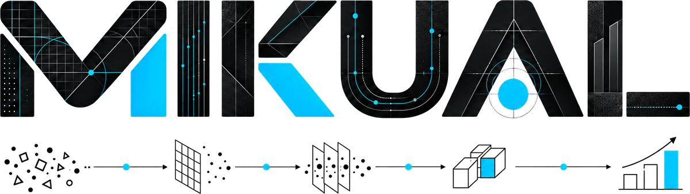

Cuestionamos. Elegimos. Construimos.
El lema no es un eslogan: es el método. Lo seguimos en cada proyecto, en este orden, y cada etapa tiene un resultado que puedes ver.

Cuestionamos
Investigamos el negocio, sus procesos y sus datos antes de proponer nada.
- Entendemos cómo opera hoy tu negocio.
- Revisamos procesos y datos disponibles.
- Definimos qué número debería moverse.
Elegimos
Priorizamos por impacto y esfuerzo con criterio de negocio, aunque la respuesta sea «esto no lo necesitas».
- Mapeamos las oportunidades.
- Las ordenamos por impacto contra esfuerzo.
- Descartamos lo que no vale la pena.
Construimos
Desarrollamos lo elegido y lo medimos contra la métrica acordada.
- Automatización, producto digital o solución de datos.
- Construcción acotada a lo elegido.
- Medición contra la métrica acordada.
Primero la pregunta, después la tecnología.
La costumbre de la industria es responder «¿qué quieres que te construya?» en lugar de «¿qué está pasando en tu negocio?». Así nacen el sistema que nadie usa, la app que no movió las ventas y la licencia que se paga cada mes por costumbre.
Usamos IA solo cuando es la mejor respuesta al problema, no porque esté de moda.
Cada escalón reduce el riesgo del siguiente.
Todo empieza con una llamada de presentación. Después avanzas solo si vale la pena.
- 01 · PUERTA DE ENTRADA
Diagnóstico
Cuestionamos + Elegimos.
- 02
Propuesta
Plan de lo que vale la pena construir.
- 03
Construcción
Solución completa.
- 04
Acompañamiento
Mejora continua.
Empieza por el diagnóstico: sabrás qué resolver antes de invertir.
Cuestionamos. Elegimos. Construimos.